#
Off-topic Rants
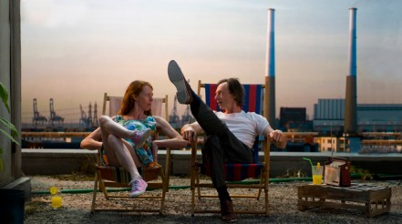
With last year’s tragic The Wedding Party opening last years festival, I think that it’s fair to say that my bar had been significantly lowered in terms of what I was expecting. Luckily I was pleasantly surprised with Belgian/French film The Fairy, a film that was also written and directed by its three lead actors. The film is a slapstick romance which revolves around a man working the night shift at a hotel who is visited by a woman claiming to be a Fairy. With strong links to the likes of Buster Keaton, Charlie Chaplin and Jacques Tati’s work, the film itself feels like a series of sketches that have been worked around a really rough storyline. Unfortunately with this being the case, the longer the movie went, the more the audience became restless - possibly getting antsy to get to the Town Hall for their free booze and canapés. That said, I still thoroughly enjoyed The Fairy with it’s surreal “Boosh-like” moments which included a strange under-the-sea dance and also the very clever use of rear projection in a chase sequence.
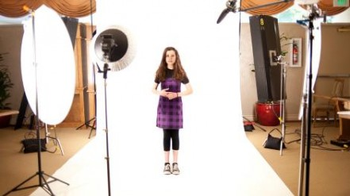
What would be a more fitting way for a former child actor to officially start his festival than with a documentary about child actors trying to break through in the states. The Hollywood Complex follows a dozen or so child actors and their families who are staying at a complex called Oakwood during the 3-4 month pilot season in the states. To be honest I went to see this because I thought it would be a bit of a laugh, children and their pushy stage parents trying to find fame and fortune in Hollywood. I was right to some degree with these vibrant young children spouting off some dialogue that only a child could, however between these moments of sheer hilarity were moments that made my skin crawl. From one set of parents showing their 7 year old YouTube clips of sick and dying children to prepare her for her audition as a sick child on Grey’s Anatomy, to the mother who became a Scientologist to help improve her daughters chances of becoming famous (she got cast in something almost immediately after her mother joined), there were some really stomach churning moments.
SO. How are you? Good golly, miss molly, it has been some time since I posted any kind of update. Thanks for sticking by, and having a glance every now and then to see what’s going on. And although all may have seemed to come to somewhat of a stand still at SHOTGUN! HQ, we have been busy, busy, working away at developing the script, meeting with people (some of the LateNite team were over in the USA with their short film FALLOUT!!).
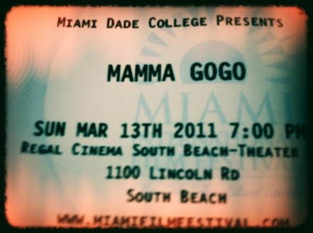
Unfortunately, due to horrible traffic in South Beach, Miami, I missed the start of this film – which is a real shame, as I’m sure I missed some really important set-ups and character development. I also ended up having to sit in the aisle of the theatre, as it was completely sold out, which wasn’t tremendously comfortable. However, regardless of what actually happened at the start of the film, or the fact that my seat was in fact the floor, as soon as I started watching, I was instantly hooked. This is a really sweet movie, and there was definitely a few people exiting the theatre with tears in their eyes.
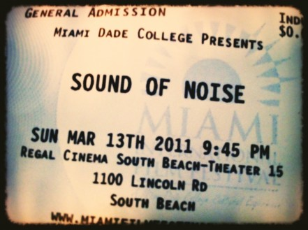
We didn’t really plan to go and see this film – we were supposed to head to another film on the other side of Miami, however the large taxi ride didn’t really seem that appealing. So instead, we decided to stay at the same theatre, and just see whatever was up next. I misread the program, and was expecting to see a depressing, but critically acclaimed South African movie. However, what we ended up seeing was a crazy musical masterpiece! This is probably one of the best films I’ve seen at the festival. The only problem was – within the first 20 minutes of the film, the movie stopped, the lights went up, the fire alarm went off, and we were forced to evacuate the building! Boy, oh boy! We haven’t had much luck this week with theatres! Luckily though, after the fire department did what they do, we got to go back in the theatre and watch the rest of the film. The only issue – we missed about 5 or 10 minutes! What a pain! Never-the-less, even taking to consideration the unexpected intermission, this was a very clever, and aurally epic film!
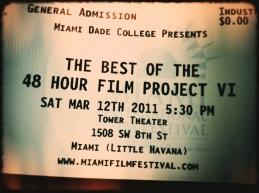
Last night was the official awards night for the 48 Hour Film Project International Competition – strangely named Filmapalooza – in which our film, Fallout was competing. Although we didn’t exactly have the most enjoyable experience on the night, as both our film and ironically the Sydney team’s film experienced several technical hiccups and false starts (which was slightly nerve-racking as you can imagine!) – both films eventually screened perfectly in front of a very excited and packed audience at the final awards screening. It was great to be amongst so many talented like-minded film-makers! There were so many amazing films on display, from cities all over the world.
We have seen a lot of documentaries and low-budget films so far at this years festival – however Elite Squad 2: The Enemy Within is certainly at the other end of the spectrum. Having already enjoyed public and critical acclaim, Elite Squad 2 is the current all-time largest box office ticket seller and highest-grossing film in Brazil, ahead of massive Hollywood blockbusters such as Avatar. This film was epic – it had massive action sequences, a soundtrack that shook the walls of the theatre, and even an opening title sequence that makes Michael Bay look like a wimp!
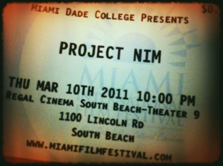
After seeing the movie poster and promotional stills for this film – who wouldn’t want to go and see it? Nim is just so darn cute! Project Nim was the name of a Columbia University experiment led by psychologist Herbert Terrace seeking to discover how much chimpanzees and humans could communicate through sign language.
One thing that has really surprised me thus far at the festival is just how many fantastic documentaries have been on show! Boundary-pushing Oscar-nominated Morgan Spurlock is a true expert in his field. With profitable and Internationally successful films like Super Size Me and Where in the World is Osama Bin Laden? under his belt, I had quite high expectations for The Greatest Movie Ever Sold, but Morgan delivered. This is a hilarious, educational and seriously well crafted documentary that is based around such a simple, yet such a clever concept.
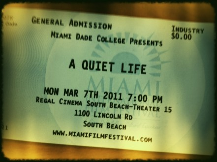
A Quiet Life is the story of an Italian expatriate Rosario who runs a quiet, yet successful roadside restaurant and hotel with the help of his beautiful younger business driven wife, Renate. Rosario is the head chef in his kitchen, and pushes the boundaries of what’s normally on the German menu by dishing out wild boar and crabs in the same sitting (something that’s obviously not the norm in Germany given the reaction from the rest of the staff in the kitchen!). They live a quiet life, where running the business, looking after their young son Mathais, and trying to kill a whole bunch of trees with copper nails (as the council won’t allow them to cut them down unless they are dying), are their only joys, priorities and challenges.
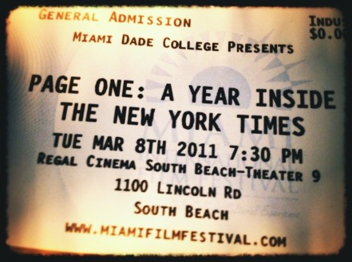
Despite the occasional dodgy film, we have been so lucky to see so many quality films so far at the festival. Page One: A Year Inside The New Work Times, for me now however has definitely been a highlight. This is a serious slick, fun, enthralling and inspiring documentary that has been skilfully been put together with an incredible attention to detail.
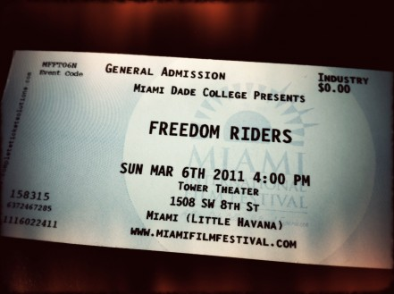
Every now and again you come across a documentary that is slick, sophisticated, and really makes you think. Freedom Riders has got to be one of the most professional, and thought provoking films I have come across in recent years. Almost one hundred years after United States President Abraham Lincoln issued Emancipation Proclamation, formally abolished slavery, and despite the increasing influential Civil Rights Movement, in the south of the country, racial segregation still ruled the land. As racial tension mounted, the current government in power – the Kennedy administration – were far too preoccupied with other matters, and remained indifferent on the subject.
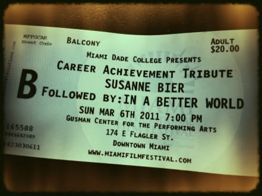
At the Academy Awards this year, the beautiful and incredibly intelligent Susanne Bier picked up the Best Foreign-Language Film award, so the expectations for this film were obviously fairly high when we walked into the cinema. After an insightful question and answer session, we were straight into this extraordinary and exceptional work of art.
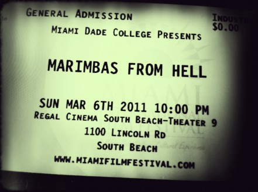
I am currently travelling with two other LateNite Films people at MIFF, and we all went and saw this film, titled Marimbas From Hell. One person thought it was a complete and utter waste of his time, another thought it was seriously funny – so hilarious that he kept on giggling like a school girl all the way to dinner (and no, it’s not hard to guess which member of our team I’m talking about). Personally, although I liked elements of the film – and yes, I did laugh at a few of the jokes – it was also one of those festival films where you just can’t wait for the closing credits. It was painful to watch, because it was slow, predictable, and just plain dull. It was also projected in the wrong aspect ratio – which never helps things!
At film festivals, there are always a few war documentaries thrown into the mix. Normally they are either very anti-war, or very pro-solider. One of the reasons I really loved this film is that it wasn’t forcefully pushing an opinion either way – although there were definitely moments where it showed war in a very negative and horrible light, at other times, it really showcased the role of a soldier is being a vital role in the fight against terrorism. Although the film-maker would have definitely have had a bias one way or the other, they definitely treated the subject with a huge amount of respect, and left the audience with a lot of questions that they need to answer on their own.
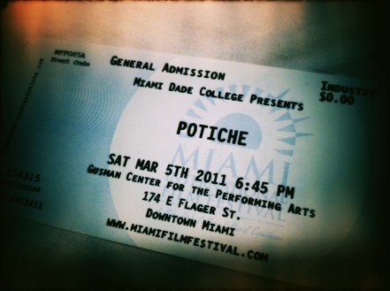
Potiche (slang for “trophy wife”) is one of the funniest films that I have seen in a long time! From the opening Disney-like scene where the Madame Pujol is prancing around the woods in a tracksuit and hair curlers, listening to cheerful birds, and surrounded by friendly deer and a playful squirrel, only to come across two bunny’s going for it, I instantly knew that this was going to be a film on my wave length.
Daniel Cockburn’s debut feature film, You Are Here is a bizarre and mindstraining experimental film (despite what the director claimed in the Q&A session) that follows a woman investigating several documents and seemingly random objects that continue to reappear as she keeps filing and archiving them away.
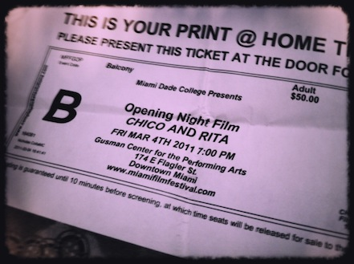
Over the next few weeks I will be uploading as many brief reviews as I can manage, from films that I come across at the Miami International Film Festival. I’m going to be writing them on an iPad, and uploading them whenever I come across free Wi-Fi, so please excuse any poor grammar and spelling mistakes! I’m also going to take photos of all the tickets on my iPhone just for fun. If you agree or disagree with anything I write, please let me know via the comments! Also, if you’re at the festival this year, let us know!
What a crazy year 2010 was for everyone at LateNite Films! As we already start to get completely crazy busy in the new year, we thought we’d give you a quick summary of what’s been happening over the last several months:
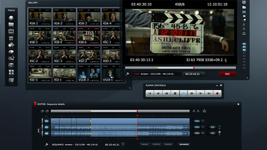
At 3:30 in the morning today, I received an e-mail from EditShare announcing that the first public beta release of Lightworks 10.0 was released into the wild. Unfortunately I’ve had quite a bit on today – however I have managed to do a couple of tests, and do a bit of mucking around. Over the next few months we will do a lot more detailed testing, and also cut together some actual projects on the system. However in the meantime, the amount of misinformation out there already is mind-blowing, so I thought I’d quickly run through some of the basic’s. Please be aware however, that I’m no expert – and this is really the first time I’ve ever had a good play with the Lightworks platform. I have known about them for years, and have read a lot about them – but never actually used one.
Well I’ve just come off one of the more intense weekends I’ve had in a long while, stretching from Friday afternoon to Monday night (quite a contrast to the intense weekend before, an marathon of MetallicA). Where to start? At the beginning. Yes. That seems suitable.
Have been away for a few days with my lovely lady and managed to take a load off for the first time in god knows how long. The great thing about this trip being that I got the opportunity to read the Wah Wah diaries by Richard E. Grant which is basically his diary from his first film as a writer/director and jesus was it an eye opener.
I had been pretty fucked off after the script read. Not because of the feedback, not because the script was not where I thought it was. Because I felt like we lost our balls. Like I lost my balls a little bit. I got so fucking caught up in the whirlwind of trying to appease everyone, as we all did, that we lost sight of what we were trying to achieve – making the film WE wanted to see, with the help of the people around us. I didn’t even take the time to consider how exactly I wanted the script to be developed, I was too busy trying to accommodate those around me, close & far. And in the midst of all this, I thought I’d take a step back from my producing responsibilities and try to focus on the writing/directing side of things. Little did I realise that my chief responsibility as a producer had been to push the project along, be the heart & soul of the thing. Even having Chris point this out to me, I still thought it to be their responsibility to keep this train arolling. NO! NO FUCKING NO!
We quite often have people who come and go in our lives, some making more of an impact than others. And occasionally those people who make the biggest impact leave your life so quickly that you never get to thank them for what it is they have done for you or what it is they have meant to you.
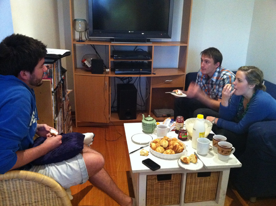
So after what can only be described as a bizarre few weeks since the reading – the boys and I are back in the saddle and working our little asses off as per usual, and on a saturday no less. Anyway today Chris and I met up for what can only be described as a frustrating yet kinda fun afternoon. So often when things get hard you forget why you enter into something like film making because it gets so freakin hard your head wants to explode.
As I’m sure you’ve noticed by now, we’ve recently got ourselves a new SHOTGUN! logo – which is VERY exciting! It was designed by the extremely talented René Ellis, who also designed the current LateNite Films logo, and we must say, we cannot recommend René highly enough! She is an absolute pleasure to work with, and really spends a lot of time with us to really get the logo exactly right.
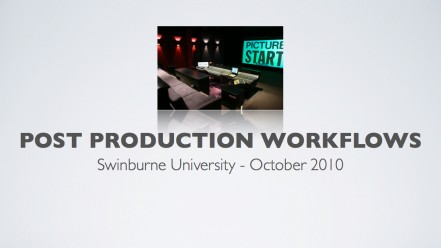
Last week I had the pleasure of being invited to Swinburne University to speak to 3rd and 4th year students studying towards their Bachelor of Film & Television in Prahran. I’ve had a couple of requests already to share some of the slides from the presentation, so I thought I might as well put together some useful resources to sum up what I discussed, and share them with world via this blog! So instead of just sitting in front of your computer or mobile device reading this – imagine that you’re a student in a university class room. The only difference is that instead of being able to just yell out questions (of which we had some really great questions when I did the talk!), you’ll have to just submit a comment at the bottom of this page and I will get back to you. Please keep in mind that this was only a short introduction to the world of post production, so I won’t be going into so much detail in regards to all the technical things – consider it a quick overview. I have however included a stack of really useful links at the end of the post, so you can continue your learning… Enjoy!
Deary me! What a week it has been! Things have been non-stop for me personally – and today is the first day for a long while where I’ve actually been able to just sit down for five minutes and ponder things. From all reports the live stream and script read in general was extremely successful, and we received a lot of really helpful feedback that will help shape SHOTGUN! into a better movie. So at the end of the day, despite all the hard work and hair pulling – it was certainly worth it in the end. But rather than tell you how perfectly everything went – which isn’t really helpful if you’re trying to do something like this yourselves – I thought I’d tell you about some of the issue we had putting together this event, and how we go around them – and also list some things for you to think about if you’re trying to do a similar event.
This is a saying that I love to use (because it makes me sound smart, is apt & is a throw away to the expected), because in life, nothing ever really ends (aside from life itself & even then, it’s a new beginning), things only ever begin. The end of a day is really the beginning of the night, the end of the week is really the beginning of the weekend/the new week, the end of a job is really the start of the next adventure & so it goes.
Well, despite all odds, we did it! From all reports, for those in the live audience, and those watching at home, the live script read was a big success! Thank you so much to everyone who attended in person, and those that made use of the live stream via the Internet! An even bigger thank you to everyone who completed feedback forms, as this information will be a huge help in shaping the film into the type of movie YOU want to see!
Here are a collection of amazing photos from the live script read taken by the extremely talented Michelle Leong. Thank you to everyone who attended!
Yesterday was a BIG day! We bumped into the venue and set up all the streaming gear, and Al and Nick also did some rehearsals with the actors for the live event. We tested everything, and everything seemed to work – which was a great relief! Not long to go now… Which is both exciting and scary! We still have a bit to work out, so I’m going to leave you there, and get back to it! See you tonight!
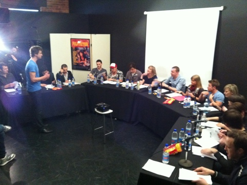
Written by Guest Blogger on 17th October 2010 So… Here’s how it went down from my ppv.
There’s no turning back now! As I sit in the dark of my room, I am suddenly hit with a certain reality – this once small little script read, now turned LateNite Films event, is really about to happen. A rush of excitement, anxiety, relief, nervousness, confidence and gratitude washes through my veins & my blood. As I sit in the dark of my room, I prepare for our one & only rehearsal tomorrow, plotting various warm ups, some improvised exercises & of course, the read itself. But it is not the directing side of this shin-diggity-do that is likely to cause any sort of anxiety. No, that should be fine. Who couldn’t direct 16 actors, right?
OK… So I have to admit – my life is way too much fun! Despite the fact that this whole “live stream” event has now blown completely out of proportion, I am so excited about the whole thing. I’ve spent the day driving around picking up gear, and have spent the last few hours testing it, and making sure it all works properly… The good news is, it does. And despite the fact we have a near non-existant budget for this event, we’ve managed to call upon a lot of favours, and are now able to really put on a show! The gear list has piled up dramatically, and I have no idea how I’m going to fit it all in my car now, but it’s still very exciting and very achievable! The best thing about doing stuff like this as well, is that it helps members of our team try new things – for example, Jacqui Hocking normally spends all her time shooting and cutting documentaries, but on Sunday night, she will pressing the buttons on the vision mixer. This will help her expand her skill-set into a whole other world – if, heaven forbid, the film industry dies, then at least she can jump on a console for live shows and TV! Although the technology is very similar, and most of the problems are the same (lack of money, lack of time, it’s always really hard to find good people) – there is still a completely different mentality between live events and filmmaking. I’m lucky – as I moved from the live world to film, so I’ve seen it from both sides. The best thing about this event is now I can drag all the LateNite team into my world! Tomorrow, we will do some tests on the actual location, so it’s certainly exciting times ahead! To infinity & beyond!
I just read Chris and Al’s last posts and sat for a minute in silence. Let me paint the picture for you. It’s almost 2am, it was my birthday yesterday, it is the last night of my bar job tomorrow night as my bar is closing, it’s the script read on sunday night, then I have 2 days of night shoots on a short film that I agreed to do, all the while pushing on with SHOTGUN! producing duties.
Like a lot of things we try and do, what started off a little script read with a few actors, a director and a kitchen table has all of a sudden blown up into a full scale event! I guess we’re just too excitable – we come up with ideas that we think “would be cool” to do, and then next thing you know, we’ve all agreed to go ahead with the harebrained scheme, and now it’s time to work out how we actually pull it off!
Written by Guest Blogger on 11th October 2010 For those following our persistent facebook updates, you’ll know it’s been quite a week over here at SHOTGUN! HQ. From our FB membership explosion, to trying to organize all the logistics of this LIVE SCRIPT READ (this coming Sunday October 17th…) & also hearing of murmurings coming in from international waters… SHOTGUN! is really starting to pick up some pace!
Greetings to all of our droogies (or SHOTGUNIES as we have now coined you all), closely following the every which move of the party here at LateNite. This past week has proved to be quite a busy one, and I’ve come here to show you the way of the future… IN the midst of all of our organization, shot listing, scheduling & the butchering of my baby (script… SCRIPT. Not an actual baby. You can’t take me to court), as you may well be aware, we have taken it upon our handsome selves to organise a LIVE SCRIPT READ.
In the past 12 or so hours a few things have, understandably so, kept me from sleeping. For starters last night I had to take part in emergency evac training at work where we were put in a “situation” that we may or may not have to deal with on a daily basis. Unfortunately for the poor trainer my mind went a wanderin’ with all the possible ridiculous scenarios that they could potentially come up with. For example “Ok guys, we have let a pack of wild zebras loose in the stalls of the state theatre and have place an injured 90 year old woman in the front row. You’re job is to somehow find a way through the zebra pack to rescue the woman who has broken her hip trying to get out of her chair!!”
At long last, we finally got around to putting together our very first video blog! We have to be honest – the camera work is pretty awful, as is the audio, and we did notice those little lines at the start of the video… however! The important thing is that we got it out there to you, and you can be rest assured that we’re spending all our time and energy on getting the feature film up and running! That said though, we have certainly already learned from our mistakes, so episode two will certainly be a lot slicker… Stay tuned!
I had two maths teachers when I was at high school. One was frighteningly similar to a certain Hannibal Lectar and used to hang a mirror on the black/white board so he could see people screwing around behind him and the other was a borderline alcoholic who once drew us a diagram on how to grow our own doob plant because we weren’t listening to what he was saying.
A question I often get asked about script writing, film making, acting is – Where do I start? How do I start? What’s a good place to start? My answer is always invariably… at the beginning. Now that doesn’t have to be a conventional beginning. Your beginning could be someone else’s end. Your end, someone’s mid point. And so on & so forth until I have confused you so much, you forget what the question was.
Written by Guest Blogger on 23rd September 2010 Thank God for new technology, right? Now with the power of a phone in the palm of my hand I can take pictures of my script, upload them to our wonderful blog, and then if you have our iPhone app thingy you can see it straight away on yours! Isn’t this marvelous!
LateNite Films It gives me great pleasure to announce that we officially have a new logo for LateNite Films (as we have also decided to write “LateNite Films” instead of “latenite films” as a tribute to Peter Jackson’s WingNet Films). LateNite Films We have been trying to come up with a new logo that really reflects what we stand for, for months now. We tried doing it ourselves – but just never really came up with anything solid. After officially giving up, we decided to post something on Twitter. Within minutes, we suddenly started receiving emails, Facebook messages and Twitter DMs and Replies from all over the world. After looking through all the messages, we eventually came across a reply from an amazingly talented UK-based Graphic Designer René Ellis. She had a really solid range of work behind her – but more importantly, even though we only communicated via email and Twitter, I must say, she was an absolute joy to work with. She was fast, incredibly inspiring and creative, and made the whole process a lot of fun, as we tried out various styles and formatting until we came up with something we actually all agreed on. If you ever need a Graphic Designer for any project – I highly recommend getting in touch with her! You might as well add her on Twitter – just for future reference!
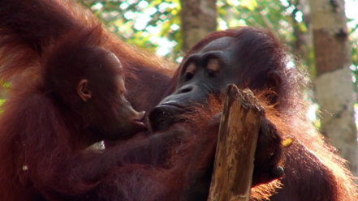
LateNite Films Reel 2010 We have decided to put our latest August 2010 Reel online for everybody to see! Normally, we only share the reel with potential clients and friends via DVDs, but this time round, we’re going the polar opposite and are releasing it for all to see on YouTube.
So we are about to head into Draft 9 territory which is a bit of a scary thought. Scary mainly because we have taken (when I say we I mean mostly Al) a 135 page MONSTER script and managed to get it to a slightly less daunting length of 90-100 pages. Something that I would have said was near impossible when I first read the 7th Draft!!!
I was in Bali over the last week and was reading Peter Jackson’s biography and one thing became evident to me. There is a single reason why that man succeeded, in not only becoming a brilliant film maker, but also making people stand up and take notice of his homeland.
If we step back in time to 2007, Alistair Marks was just your average film student studying towards a Bachelor of Film & Television at Swinburne University. However, unlike a lot of young up-and-coming filmmakers, he decided that instead of just putting together a short film that has a very limited chance of actually going somewhere, he would write a full length feature film script, and then film the opening sequence and submit it to festivals. As it turns out, Alistair was on the right track, as the script attracted a great collection of actors and crew, and put him in a great place to actually get the feature film from words on a page to big bangs on the big screen!
It’s with great pleasure and excitement that I welcome you to the all new SHOTGUN! behind the scenes blog. For those of you that have been following some of the work we’ve done at LateNite Films over the years, you’ll know that we’re all a bit geeky (in a good way!) and enjoy making the most of the power of the Internet and social networking, but more importantly, we just honestly love the whole filmmaking process and really want to share any new knowledge we pick up along the way with other like-minded people.